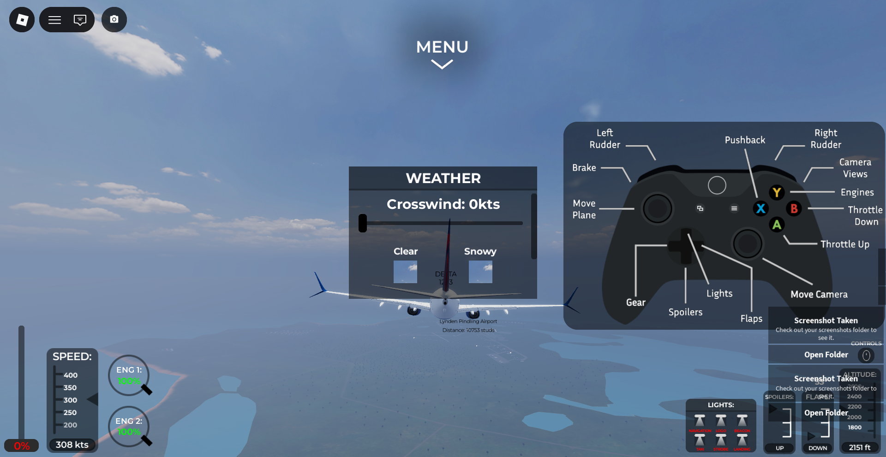

01 / PEOPLE
People Skills
Memahami karakter, mendengarkan, dan berinteraksi dengan berbagai orang.
Mahasiswa S1 Teknik Elektro di Telkom University yang tertarik pada teknologi, pengembangan diri, kerja sama tim, dan proses mengubah ide menjadi sesuatu yang nyata.


>>>>>>> 1c43da4c4d193d54737f20f4e24175dee0ecf3a6:index.htmlSaya adalah mahasiswa Teknik Elektro yang senang mempelajari hal baru, menghadapi tantangan, dan mengembangkan kemampuan melalui pengalaman langsung.
Di luar perkuliahan, saya mendapatkan banyak pelajaran dari pengalaman sebagai coach, kegiatan organisasi, dan komunitas teknologi. Pengalaman tersebut membantu saya memahami pentingnya disiplin, komunikasi, tanggung jawab, dan kerja sama.
Memahami karakter, mendengarkan, dan berinteraksi dengan berbagai orang.
Memberikan arahan, menjaga motivasi, dan bertanggung jawab terhadap tim.
Menyesuaikan diri dengan lingkungan baru dan menghadapi tantangan.
Berpikir secara sistematis, mengevaluasi masalah, dan mencari solusi.
Setiap pengalaman memberi saya kesempatan untuk belajar, bekerja bersama orang lain, dan memahami cara menghadapi tantangan dari sudut pandang yang berbeda.
Membimbing sekitar 40 atlet melalui latihan, arahan, evaluasi, dan pengembangan kedisiplinan. Pengalaman ini melatih leadership, komunikasi, pengelolaan tim, serta kemampuan memahami karakter individu.
Mendapatkan pengalaman berinteraksi dalam lingkungan komunitas kampus, membangun relasi, dan bekerja sama dengan orang lain.
Mengenal lingkungan pengembangan proyek teknologi, termasuk Computer Vision dan OpenCV, serta belajar bekerja dalam tim dan menghadapi tantangan teknis.
Menjadi bagian dari komunitas pembelajaran teknologi yang mendorong pertukaran wawasan, kolaborasi, dan pengembangan kemampuan.
Beberapa bidang dan proyek yang menjadi bagian dari perjalanan belajar saya.
Eksplorasi pengolahan citra dan pengenalan objek menggunakan Computer Vision dan OpenCV. Proses belajar ini memperkenalkan saya pada penerapan pemrograman untuk menyelesaikan masalah secara teknis.
Konsep ekosistem perawatan diabetes yang menghubungkan ide produk, pemanfaatan bahan alami, pemantauan, dan edukasi untuk membantu pengelolaan kesehatan.
Mempelajari komponen elektronika, rangkaian dasar, pengukuran, serta cara kerja sistem melalui praktikum dan percobaan.
Saya tertarik mengembangkan ide melalui eksperimen, mencoba pendekatan yang berbeda, dan mempelajari hal baru secara bertahap.
Bidang yang ingin terus saya pelajari dan kembangkan seiring perjalanan saya di Teknik Elektro.
Hubungan antara hardware, software, dan sistem tertanam.
Konversi dan pengendalian energi listrik menggunakan elektronika.
Bagaimana suatu sistem dapat dipantau dan dikendalikan.
Sistem elektronik dan kendali yang digunakan dalam dunia penerbangan.
Integrasi sensor, mekanik, elektronika, dan pemrograman.
Pemrosesan informasi visual menggunakan sistem komputasi.
Ruijie Networks · Sertifikasi berlaku hingga September 2028.
Saya terbuka untuk belajar, berbagi wawasan, dan berkolaborasi dalam kegiatan atau proyek yang memberikan pengalaman baru.